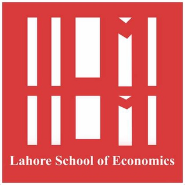

The University of Chicago
Master of Science in Computational Analysis and Public Policy - June 2027 (Expected)

Lahore School of Economics
Bachelor of Science in Economics and Political Science - August 2020 - May 2024
Pak Alliance for Maths and Science (PAMS)
Research Associate - Machine Learning - March 2025 - September 2025
Center for Economic Research in Pakistan (CERP)
Survey Analyst - November 2024 - September 2025
LAAM Technologies
Growth and Marketing Data Analyst - May 2024 - November 2024
Punjab Social Protection Authority (PSPA)
Data Analyst Intern - January 2024 - April 2024
Center for Research in Economics and Business (CREB)
Research Assistant - June 2023 - August 2023